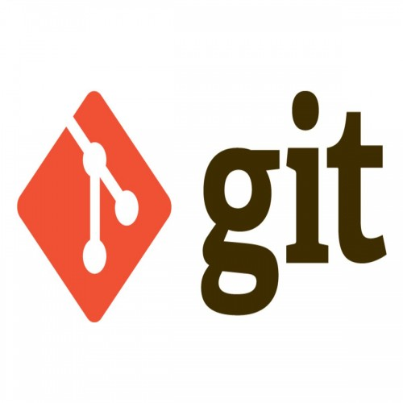

Fernando Quintanar Juárez

Git es un S sistema de control de versiones distribuido, lo que significa que un clon local del proyecto es un repositorio de control de versiones completo. Estos repositorios locales plenamente funcionales permiten trabajar sin conexión o de forma remota con facilidad. Los desarrolladores confirman su trabajo localmente y, a continuación, sincronizan su copia del repositorio con la copia en el servidor. Este paradigma es distinto del control de versiones centralizado, donde los clientes deben sincronizar el código con un servidor antes de crear nuevas versiones.